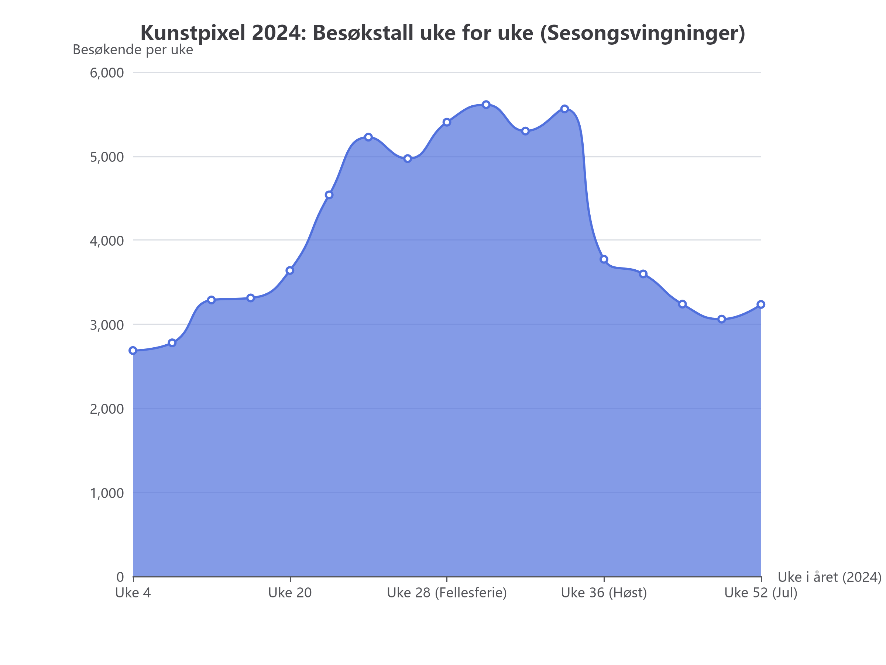

Nå har vi oppgradert Kunstpixel! Fra å bare ha overordnede tall per utstilling, har vi nå full dag-for-dag og uke-for-uke historikk for alle 17 år (2010–2026).
dagsbesok i 05_data/museum.db og som CSV.deterministisk-validator (pytest): Alle 6 strenge matematiske regler bestått på 0,33 sekunder!
Med dag-for-dag data kan vi nå visualisere akkurat når publikum kommer og når inntektene skapes:

Figur: Ukentlig besøk i 2024. Merk toppen i uke 26–32 (fellesferien) på over 5 500 gjester/uke.
I stedet for å spørre en KI "ser disse tallene greie ut?", kjører vi deterministiske regler i kode (uten tokens, uten synsing):
| Regel | Hva som testes | Resultat |
|---|---|---|
| Mandager stengt | Er besok_totalt == 0 og inntekt_nok == 0 for alle mandager? |
PASS (100 %) |
| Kategorisum | Er antall_voksne + antall_student + antall_barn == besok_totalt på samtlige 6 209 rader? |
PASS (0 feil) |
| Prisintegritet | Er inntekt == (voksne * 120 + student * 80), unntatt første søndag i måneden (gratisdag)? |
PASS (100 %) |
| Fullstendighet | Nøyaktig 6 209 dager fra 2010-01-01 til 2026-12-31 uten hull eller NULL-verdier. | PASS |
Prøv å stille slike spørsmål nå som databasen har fasiten:
← Leksjon 6 (Inntekter & Håndbøker) | Leksjon 3 (Enkelt forklart)